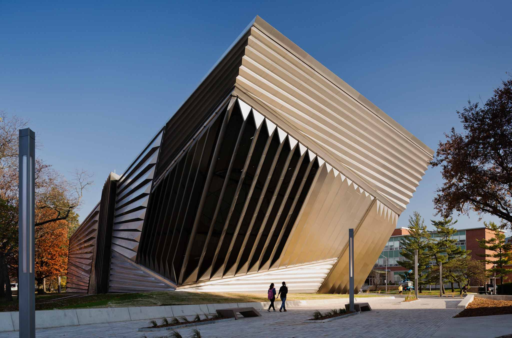

Explore

Visit Us
Mission Statement
MonoMuse is dedicated to exploring the evolving relationship between art, technology, and society. Our mission is to inspire curiosity and creativity by showcasing innovative exhibitions that highlight how digital tools, emerging technologies, and human imagination shape the future of artistic expression.
Who We Serve
MonoMuse welcomes first-time visitors, returning members, students, families, and anyone curious about the intersection of art and technology.
Founded
MonoMuse was founded in 2014 in Pittsburgh, Pennsylvania.
Milestones
- 2023: Expansion of the museum space and launch of international artist collaborations.
- 2018: Launch of the Interactive Media Lab, allowing visitors to experiment with creative coding.
- 2016: MonoMuse opens its doors with its first exhibition on digital storytelling.
- 2014: MonoMuse founded in Pittsburgh, PA.